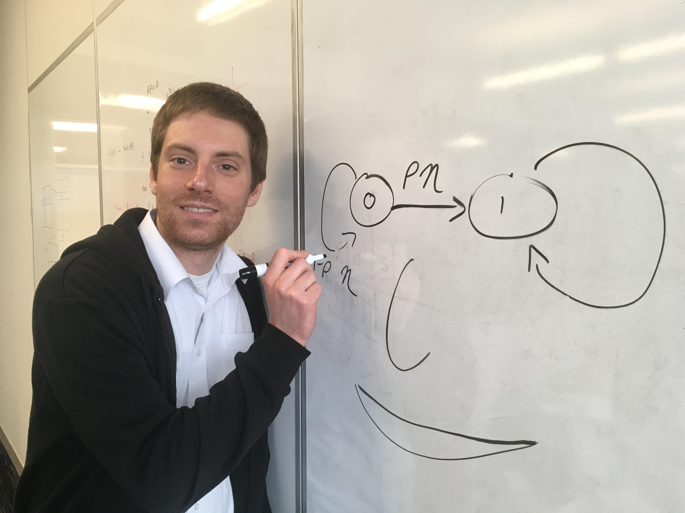

Jeff Craley is a PhD student in the Electrical and Computer Engineering department at Johns Hopkins University. His research applies machine learning and signal processing to develop algorithms to assist in clinical epilepsy monitoring and diagnosis. Specifically, his work tracks the onset and spread of seizure activity in long term clinical EEG recordings using novel models of the underlying neurological phenomena.
He received his M.S. in Electrical Engineering from Boston University in 2015. He earned a B.S. and B.A. from Virginia Tech in Aerospace Engineering and English Literature, respectively, in 2011. Intrigued by the unique set of technical challenges and motivated by potential improvements in patient care, Jeff plans to continue working in engineering for healthcare applications after completing his graduate studies.